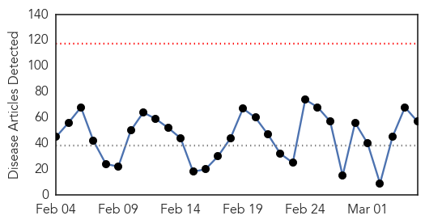
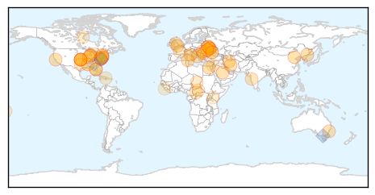

Unknown
30-Day Web Trend
0 alerts, 0 warnings

30-Day Twitter Trend
0 alerts, 0 warnings

Article Locations

Article Confidences

Top Articles:
- 0.982
- Hong Kong reports sixth H7N9 bird flu case
- 0.931
- Boomers Should Consider Shingles Vaccine, Physician Says
- 0.917
- Chicago Tribune
- 0.917
- Chicago Tribune
- 0.917
- Chicago Tribune
- 0.917
- Chicago Tribune
- 0.917
- Chicago Tribune
- 0.917
- Chicago Tribune
- 0.917
- Chicago Tribune
- 0.917
- Chicago Tribune
- 0.917
- Chicago Tribune
- 0.917
- Chicago Tribune
- 0.917
- Chicago Tribune
- 0.917
- Chicago Tribune
- 0.917
- Chicago Tribune
- 0.917
- Chicago Tribune
- 0.917
- Chicago Tribune
- 0.917
- Chicago Tribune
- 0.917
- Chicago Tribune
- 0.895
- Rabid Radnor raccoon a reason why the public needs health care access
- 0.866
- Russia says NATO applies "cold war" standards
- 0.866
- Pro-Russian demonstrators storm the regional government building in Donetsk
- 0.866
- Britain says freezing assets of 18 Ukrainians
- 0.866
- Russia, West agree Ukraine should stick to EU-brokered peace deal-Lavrov
- 0.866
- U.S. House to vote soon on aid for Ukraine, will work with Obama -top lawmakers
- 0.866
- Egypt officials blames protesters for deaths at pro-Mursi camp
- 0.866
- U.S. says Iran must address all nuclear work concerns
- 0.866
- Storm clouds and dust can be seen in the sky above a woman as she walks at dusk along Mollymook Beach
- 0.866
- Russians seize Ukrainian missile defence units in Crimea-Interfax
- 0.866
- The European Investment Bank grants Tunisia $690 million loans
- 0.831
- NYC health advisory: Chinatown seafood markets linked to Mycobacterium marinum skin infections
- 0.777
- Unusual epilepsy cases in schoolchildren on the rise
- 0.771
- Kingaroy town water warning lifted
- 0.739
- UK HealthCare lifts visitation restrictions
- 0.712
- Antibiotic misuse common in U.S. hospitals: report
- 0.671
- New study ranks Alzheimer’s as third leading cause of death, after heart disease and cancer
- 0.662
- Rains bring further misery for C.Africa, S.Sudan refugees
- 0.662
- Rains bring further misery for C.Africa, S.Sudan refugees
- 0.647
- Farsnews
- 0.609
- Watertown
- 0.609
- Ghana hosts international child health symposium
- 0.594
- CDC: Hospitals contributing to rise of superbugs – The Chart
- 0.592
- Condoms save lives says Health
- 0.586
- Alzheimer's estimated to be No. 3 killer disease in U.S.
- 0.582
- CDC 'sounds the alarm' on improper antibiotic use
- 0.569
- Kerry urges Russia to hold talks with Ukraine over crisis
- 0.569
- Strauss-Kahn best man to replace France's Hollande, says leaked poll
- 0.562
- Alzheimer's May Contribute to More Deaths Than Thought
- 0.557
- Rare Skin Infection Traced To Chinatown Fish Markets « CBS New York
- 0.555
- Deaths from Alzheimer's disease may be vastly underreported
Showing top 50 articles...
Top Tweets:
- 0.801
- 9 Days Until 'Flu Launch' ...
- 0.693
- Stomach flu is not the flu. Flu is not a stomach/intestinal disease. It's a respiratory disease. via http://t.co/sgClMaTpa8
- 0.535
- Keep the flu to yourself! Help prevent the spread of flu by staying home when sick http://t.co/aSuaMWsver fightflu
Hemmorhagic Fever
30-Day Web Trend
30-Day Twitter Trend
0 alerts, 0 warnings

Article Locations


Article Confidences

Top Articles:
-
No articles found for Mar 05, 2014
Top Tweets:
-
No tweets found for Mar 05, 2014